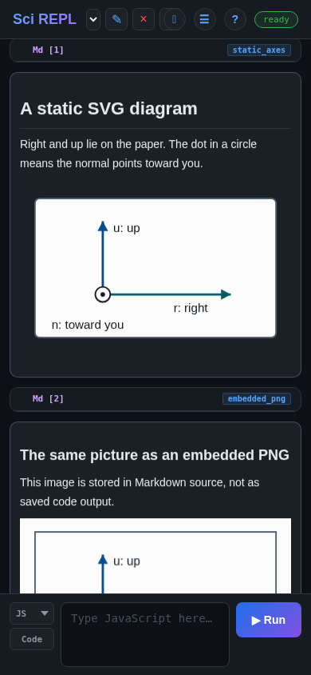
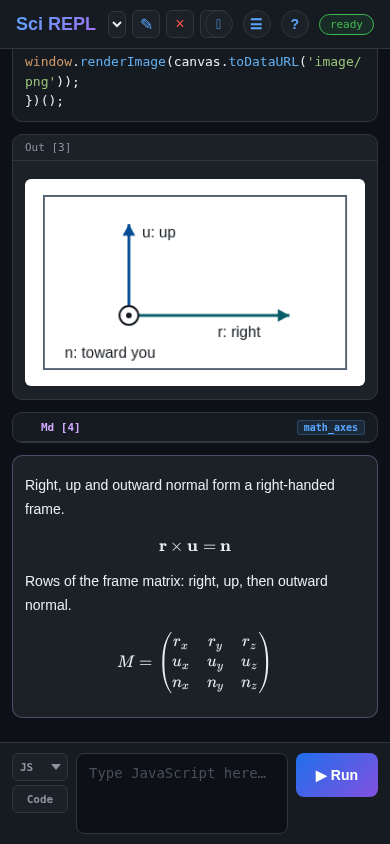

Learn by doing
Add pictures, diagrams and equations
A workbook can explain an idea with a picture as well as code. Try three ways to show the same simple coordinate frame: a static image in Markdown, a picture drawn by JavaScript, and an equation typeset with KaTeX. You do not need Python, R, a package installation, or an AI account.
The examples and screenshots were checked in the SciREPL Free browser build on . Screenshots use a narrow browser viewport; they are not Android captures. The same controls are used on Android, but their position may differ. Pro and every released app version have not been tested for this guide.
| What you want | Cell type | What creates the result |
|---|---|---|
| A fixed diagram or picture | Markdown (Md) | Inline SVG or an embedded PNG, stored in the cell's text |
| A picture calculated or drawn by code | Code → JavaScript (JS) | A canvas, displayed with window.renderImage(...) |
| A formula or matrix | Markdown (Md) | TeX-style math between $$ delimiters, rendered by KaTeX |
Step 1
Open the example workbook
The companion file contains the complete examples, including an embedded PNG. It keeps everything in one small workbook so you do not have to type a long Base64 image string.
- Download the graphics example workbook (.srwb). Save the actual file, keeping its
.srwbextension. If your browser displays text, use its save/download action. Note the folder you saved it in. - Open SciREPL. In the header at the top of the app, find ☰ Menu, the button with three horizontal lines. Tap or click it.
- Choose 📂 Import File (e.g. .srwb, .ipynb, .csv, .py, .zip). Scroll inside the menu if needed. In your device's file picker, select
workbook-graphics.srwbfrom Downloads or the folder you chose. - Close the menu if it remains open, and select the new Workbook Graphics tab in the workbook selector. Your existing tabs are kept.
- Find the four cells named
static_axes,embedded_png,canvas_axes, andmath_axes. Read them before running code. The static diagrams and equations appear from their Markdown source; the JavaScript picture appears only after you run its cell.
Importing is not running. An .srwb import does not execute its code, even when the auto-execute setting is enabled. Only canvas_axes needs JavaScript execution in this lesson. There is no Run All Cells step.
Need more detail about the download or picker? Follow the manual workbook import walkthrough. The names above appear on the saved cells; the named-cell paths tutorial explains how to assign and use them. You can also create these examples in a workbook you already have open, using the steps below.
Step 2 · Method 1
Keep a static diagram in Markdown
Think of a sheet of paper facing you. r points right along the paper, u points up along it, and n points out of the paper toward you. A circle with a dot represents that outward direction, like seeing the tip of an arrow coming toward you.

Edit the imported diagram
- Find
static_axes. Tap its ✎ pencil in that saved cell's own header, near ✕. This opens the existing cell's source; the new-cell panel would make another cell. - Keep the cell-type button set to Md. In the SVG text, change
r: righttor: across. - Tap that cell's ▶ Run button to save and render the Markdown again. For an Md cell, this button renders text; it does not execute JavaScript or start a language runtime.
Or create your own Markdown cell
- Find the new-cell panel where you type the next cell. If it is collapsed, use the ⌃ Show new-cell panel button near the app title.
- Tap the cell-type button marked Code so it changes to Md. Markdown is a cell type, not an entry in the language dropdown.
- Copy the complete SVG below into the text field, without adding Markdown code fences (
```). Leave a blank line between surrounding prose and the SVG. - Tap ▶ Run to add the rendered Markdown cell. You should see the paper and all three direction labels.
<svg xmlns="http://www.w3.org/2000/svg"
viewBox="0 0 360 220" width="100%" height="220"
role="img" aria-label="Right, up and outward normal on paper">
<title>A paper coordinate frame</title>
<rect x="20" y="18" width="320" height="184"
rx="6" fill="#ffffff" stroke="#526170" stroke-width="2" />
<path d="M110 145 H280" fill="none" stroke="#075d69" stroke-width="3" />
<polygon points="280,145 267,138 267,152" fill="#075d69" />
<path d="M110 145 V48" fill="none" stroke="#064d91" stroke-width="3" />
<polygon points="110,48 103,61 117,61" fill="#064d91" />
<circle cx="110" cy="145" r="10" fill="#ffffff" stroke="#14191f" stroke-width="2" />
<circle cx="110" cy="145" r="3" fill="#14191f" />
<text x="204" y="168" fill="#14191f" font-size="16">r: right</text>
<text x="124" y="62" fill="#14191f" font-size="16">u: up</text>
<text x="42" y="190" fill="#14191f" font-size="16">n: toward you</text>
</svg>SciREPL sanitizes Markdown. This example uses ordinary SVG shapes, text, and explicit fill/stroke attributes. Its arrowheads are polygons: do not rely on marker-end="url(...)", a <style> block, scripts, or animation surviving the sanitizer.
Use an embedded PNG instead
The other static option is a PNG with its Base64 data stored directly in the Markdown source. Standard Markdown image syntax looks like this:
This line shows the format, not a working picture: replace the placeholder with the complete encoded PNG, or use the already-working embedded_png cell. The part after base64, is image data, not a filename. Keep it on one line.
For a picture that fits the cell on a small screen, the companion's embedded_png cell uses the equivalent inline HTML below, with width="100%". It is still stored inside Markdown, not as code output:
<img alt="Paper axes" width="100%"
src="data:image/png;base64,PASTE_THE_COMPLETE_BASE64_PNG_HERE">Choose one static route: use an inline SVG element for a small editable diagram, or a data:image/png;base64,... image for a raster picture. An SVG data URL such as data:image/svg+xml,... is not the same as inline SVG and is blocked in the checked build. Remote image URLs are also blocked there. These two self-contained examples need no image download when displayed.
Both static examples live in Markdown source. They can be displayed after workbook import without running code.
Step 3 · Method 2
Draw a picture with JavaScript
A static picture stays the same until you edit its source. For a picture that is computed or drawn by a program, use a Code cell and select JS - JavaScript. This example draws onto a canvas, converts it to a PNG, and sends that image to the cell's output.
- In the imported workbook, tap the ✎ pencil on
canvas_axes. Check that the cell type is Code and its language is JS - JavaScript (the compact selector can show just JS). - Read the code below, which is the complete program in that cell. It needs no other cell, file, package, or network request.
- Tap that cell's ▶ Run. A picture should appear beneath the JavaScript source.
To make a new cell instead, go to the new-cell panel, change Md back to Code if needed, and choose JS - JavaScript from the language dropdown. Paste the code, then tap ▶ Run. If JavaScript is hidden, find ☰ Menu → Languages and enable it.
(() => {
const canvas = document.createElement('canvas');
canvas.width = 360;
canvas.height = 220;
const ctx = canvas.getContext('2d');
ctx.fillStyle = '#ffffff';
ctx.fillRect(0, 0, 360, 220);
ctx.strokeStyle = '#526170';
ctx.lineWidth = 2;
ctx.strokeRect(20, 18, 320, 184);
function arrow(x1, y1, x2, y2, color) {
const angle = Math.atan2(y2 - y1, x2 - x1);
ctx.strokeStyle = color;
ctx.fillStyle = color;
ctx.lineWidth = 3;
ctx.beginPath();
ctx.moveTo(x1, y1);
ctx.lineTo(x2, y2);
ctx.stroke();
ctx.beginPath();
ctx.moveTo(x2, y2);
ctx.lineTo(x2 - 14 * Math.cos(angle - 0.5),
y2 - 14 * Math.sin(angle - 0.5));
ctx.lineTo(x2 - 14 * Math.cos(angle + 0.5),
y2 - 14 * Math.sin(angle + 0.5));
ctx.closePath();
ctx.fill();
}
arrow(110, 145, 280, 145, '#075d69'); // right
arrow(110, 145, 110, 48, '#064d91'); // up
ctx.fillStyle = '#ffffff';
ctx.strokeStyle = '#14191f';
ctx.lineWidth = 2;
ctx.beginPath();
ctx.arc(110, 145, 10, 0, 2 * Math.PI);
ctx.fill();
ctx.stroke();
ctx.fillStyle = '#14191f';
ctx.beginPath();
ctx.arc(110, 145, 3, 0, 2 * Math.PI);
ctx.fill();
ctx.font = '16px sans-serif';
ctx.fillText('r: right', 204, 168);
ctx.fillText('u: up', 124, 62);
ctx.fillText('n: toward you', 42, 190);
window.renderImage(canvas.toDataURL('image/png'));
})();
Try changing r: right in ctx.fillText(...), then run the cell again. The function wrapper (() => { ... })(); keeps this example's variables local, so you can rerun it without redeclaring top-level const variables.
The display call matters. Keep window.renderImage(canvas.toDataURL('image/png')) at the end. Returning an ordinary string such as '<svg>...</svg>' from JavaScript displays text; it does not turn that string into an inline diagram. You do not need to insert the canvas into the app's page.
Step 4 · Method 3
Explain the picture with equations
Use a Markdown (Md) cell for TeX-style math. The diagrams' directions form a right-handed frame: right × up = outward normal. In the matrix below, the first row is r, the second is u, and the third is n; the subscripts are their components in a chosen x, y, z coordinate system.
- Tap the ✎ pencil on
math_axes, or create a new cell using Code → Md in the new-cell panel. - Use the complete text below. The
$$delimiters belong in the Markdown source; do not wrap it in a code fence. - Tap ▶ Run to save and render the Markdown. You should see a cross-product equation and a three-row matrix, not raw backslash commands. No language kernel runs for this cell.
Right, up and outward normal form a right-handed frame.
$$\mathbf{r} \times \mathbf{u} = \mathbf{n}$$
Rows of the frame matrix: right, up, then outward normal.
$$
M = \begin{pmatrix}
r_x & r_y & r_z \\
u_x & u_y & u_z \\
n_x & n_y & n_z
\end{pmatrix}
$$
KaTeX is not a full TeX compiler. It renders supported math notation, but does not compile TikZ diagrams or a whole LaTeX document. Although KaTeX lists \includegraphics, it requires a trust option that SciREPL does not enable in the checked renderer; it is not an image-insertion route here. Use Markdown SVG/PNG or JavaScript canvas for pictures.
For other symbols and math commands, consult the KaTeX support table; the documentation may describe features newer than SciREPL's bundled version. For a workbook using these directions to explain cube moves, see the Markov Groups walkthrough.
Step 5
Save a copy, then know what to rerun
- Open ☰ Menu → Export Workbooks & Packages.
- Choose Workbook (.srwb) and Current tab only for this workbook, then tap Export. Save the file somewhere you control.
- To reopen that copy, use Menu → Import File. This adds another workbook tab; it does not replace your existing one.
- Check the static SVG, embedded PNG, and equations. They come from the saved Markdown source and need no code execution. Inspect
canvas_axesand run that JavaScript cell again to regenerate its picture.
Generated output is not the same as source. In the checked Free browser build, .srwb export can store a JavaScript image output, but manual Menu → Import File does not restore that code output. The JavaScript source remains, so rerun it. The inline SVG, embedded PNG, and equations are Markdown source and are displayed on import. Do not use a previously visible output as proof that code has just run.
These checks cover the workbook examples above, not image fidelity in every export format. Do not assume PDF, DOCX, Markdown, and other document exports preserve every image the same way; inspect your exported document. See files and export for the available formats.
Exporting your edited workbook creates a backup of your changes; the original downloaded example does not update when you edit a cell. Local app storage is not a backup, and Android and browser sessions do not automatically share work.
If something looks wrong
Check the cell type and source
- You see SVG code instead of a diagram: check that the cell type is Md, remove any surrounding code fences, and render the cell again. Use the complete inline
<svg>...</svg>example, not an SVG data URL. - The PNG is missing: use the companion's
embedded_pngcell, or check that you pasted the entiredata:image/png;base64,...string without spaces or line breaks. A local filename is not embedded image data. - The canvas code does not run: set its cell type to Code and its language to JS - JavaScript, not Python. Keep the whole function wrapper and the final
window.renderImage(...)call. - An imported JavaScript cell has no picture: importing this workbook does not run it or restore its code output. Inspect and rerun
canvas_axes. - You see raw TeX or a math error: use Md, include both opening and closing
$$, and check each backslash and brace against the example. Each matrix row except the last ends with two backslashes,\\. - Editing created an extra cell: the new-cell panel adds cells. Use the saved cell's ✎ pencil to change that existing cell, then its own ▶ Run button. Use Cancel if you opened its editor by mistake.
For an illustrated tour of saved cells, the pencil, and the new-cell panel, see the first-workbook interface walkthrough. Return to the workbooks reference for a concise reminder of cell types.